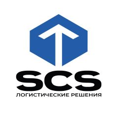

График работы на майские праздники Коллеги, информируем о режиме работы на майские: Офис в России: С 1 по 5 мая включительно — выходные С 6…

MITEX 2026 · Россия · Стенд 6А103
SCS Logistic
Карточка проверена 10 ноября 2026, 09:28 · Источник ↗ · Снимок оригинальной карточки ↗
О компании
Компания Solid Cargo Solutions (SCS) - ваш надежный партнер в области грузоперевозок из Китая. Мы предоставляем услуги по доставке грузов любых видов и объемов, от малогабаритных до крупногабаритных и тяжеловесных. Мы обеспечиваем быстрое и качественное выполнение заказов, предлагаем гибкую систему ценообразования, учитываемая все потребности наших клиентов. Мы предлагаем широкий спектр услуг: от международных перевозок, доставки сборных грузов и автотранспортных услуг до таможенного оформления, складирования и страхования грузов.
Контакты
Все контактные сведения из карточки
Контакты Юридический адрес Телефон: +7 495 118 44 11 E-mail: info@scsol.ru Адрес: 115184, Россия, Москва, Озерский переулок, дом 12 Веб-сайт: https://scsol.ru E-mail: info@scsol.ru Телефон: +7 (495) 118 44 11
Все рубрики участника
Mitex - Рубрикатор
- 1. Электроинструмент и расходные материалы
Зал
- Зал № 6
Участник выставки
- MITEX
Фотографии и изображения
Видео, каталоги и документы
В доступной карточке нет видео или документов. Смотрите сайт участника.
Последние публикации в Telegram
До десяти последних сообщений каждого найденного канала. Оригинал открывается по ссылке.
Когда логист спрашивает «Какой характер груза?» — это не формальность. От ответа зависит, дойдёт ли товар целым, во сколько обойдётся доставка и какие документы нужны.…
Медиа-публикация. Подробности — в оригинале.

🏭 ГДЕ ВСТРЕЧАЮТ ГРУЗЫ Основные пункты прибытия — крупные транспортные хабы или логистические ворота Москвы. Здесь обрабатывают и распределяют грузы со всех видов транспорта. Южные…

Медиа-публикация. Подробности — в оригинале.

Задержки в логистике из Китая часто кроются в деталях, которые упускают даже опытные импортеры. ❌ Ужесточение таможенного контроля документов В 2026 году ФТС проверяет документы…
📊 Товарооборот РФ—КНР пошёл в рост После скромных показателей 2025 года статистика бьёт рекорды: январь—февраль 2026-го принес плюс 12% к прошлому году. Сумма впечатляет —…

Рост товарооборота между Китаем и Россией требует скорости. Но каждая граница — это риск застрять на досмотре на неделю, потерять деньги на простоях или повредить…

Масштабное обновление системы маркировки затронет многие товарные группы. Рассказываем, к чему готовиться. 🆕 Новые товары под маркировку: • Сладости и кондитерские изделия — шоколад, печенье,…

🌷 Поздравляем с 8 Марта! Желаем, чтобы: ✅ Грузы всегда приходили вовремя ✅ Поставщики работали безупречно ✅ Бизнес рос и радовал ✅ А сегодня —…